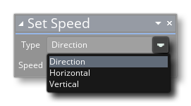
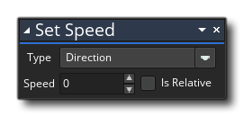
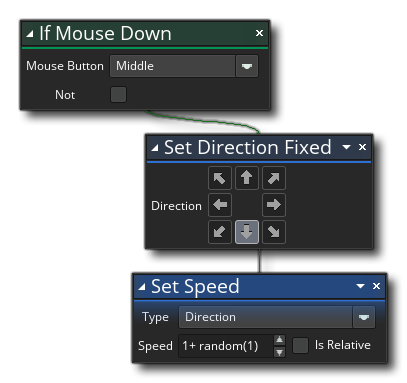

Beschreibung
Diese Aktion wird verwendet, um die Bewegungsgeschwindigkeit der Instanz festzulegen. Die Geschwindigkeit berechnet sich aus der Anzahl der Pixel, die eine Instanz in einem einzelnen Spielfeld bewegen muss (Schritt). Standardmäßig wird der Geschwindigkeitswert zum Richtungsvektor hinzugefügt. Wenn Sie also die Geschwindigkeit auf 2 und die Richtung auf 45 ° einstellen, wird die Instanz um 2 Pixel nach oben und nach rechts bewegt - Sie können aber auch klicken
auf der direction Feld und wählen Sie entweder Horizontal oder Vertikal.  Wenn Sie eine dieser Optionen auswählen, wird die Geschwindigkeit nur für die horizontalen oder vertikalen Vektoren festgelegt. Beachten Sie, dass Sie den Wert als relativ zur aktuellen Geschwindigkeit kennzeichnen können, wodurch der Wert von der tatsächlichen Geschwindigkeit der Instanz addiert oder subtrahiert wird, und Sie können auch negative Zahlen angeben, die ihn in die entgegengesetzte Richtung zur aktuellen bewegen Richtungswert.
Aktionssyntax:
Argumente:
Streit Beschreibung speed Der Geschwindigkeitswert (kann negativ sein).
Beispiel:
Der obige Aktionsblockcode prüft auf eine mittlere MausDrücken Sie auf die Instanz und wenn eine erkannt wird, wird die Richtung nach unten (270 °) und die Geschwindigkeit auf 1 plus einen zufälligen Wert von 0 bis 1 gesetzt.